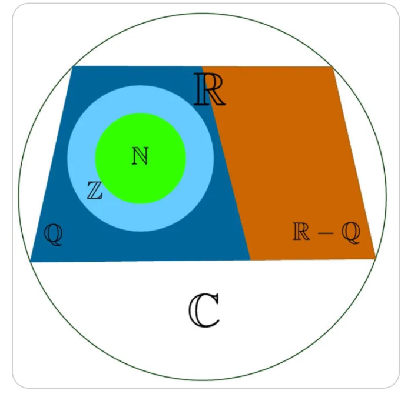

πclass — o principal pilar do seu aprendizado


Conjuntos numéricos são coleções de números que possuem características semelhantes. Eles nasceram como resultado das necessidades da humanidade em determinado período histórico
O conjunto dos Números Naturais foi o primeiro de que se teve notícia. Nasceu da simples necessidade de se fazer contagens, por isso, seus elementos são apenas os números inteiros e não negativos.
Representado por N, o conjunto dos números naturais possui os seguintes elementos:
N = {0, 1, 2, 3, 4, 5, 6, 7, 8, 9, 10, 11, …}
O conjunto dos números inteiros é uma ampliação do conjunto dos números naturais. Ele é formado pela união do conjunto dos números naturais com os números negativos. Em outras palavras, o conjunto dos números inteiros, representado por Z, possui os seguintes elementos:
Z = {…, – 4, – 3, – 2, – 1, 0, 1, 2, 3, 4, …}
O conjunto dos números racionais nasceu da necessidade de dividir quantidades. Portanto, esse é o conjunto dos números que podem ser escritos na forma de fração. Representado por Q, o conjunto dos números racionais possui os seguintes elementos:
Q = {x ∈ Q: x = a/b, a ∈ Z e b ∈ N}
A definição acima é lida da seguinte maneira: x pertence aos racionais, tal que x é igual a a dividido por b, com a pertencente aos inteiros e b pertencente aos naturais.
Em outras palavras, se é fração ou um número que pode ser escrito na forma de fração, então é um número racional.
Os números que podem ser escritos na forma de fração são:
1 – Todos os números inteiros;
2 – Decimais finitos;
3 – Dízimas periódicas.
Os decimais finitos são aqueles que possuem um número finito de casas decimais. Observe:
1,1
2,32
4,45
Dízimas periódicas são decimais infinitos, mas que repetem a sequência final de suas casas decimais. Observe:
2,333333....
4,45454545....
6,758975897589....
A definição de números irracionais depende da definição de números racionais. Portanto, pertencem ao conjunto dos números irracionais todos os números que não pertencem ao conjunto dos racionais.
Dessa forma, ou um número é racional ou ele é irracional. Não existe possibilidade de um número pertencer a esses dois conjuntos simultaneamente. Dessa maneira, o conjunto dos números irracionais é complementar ao conjunto dos números racionais dentro do universo dos números reais.
Outra maneira de definir o conjunto dos números irracionais é a seguinte: Os números irracionais são aqueles que não podem ser escritos na forma de fração. São eles:
1 – Decimais infinitos
2 – Raízes não exatas
Os decimais infinitos são números que possuem infinitas casas decimais e que não são dizimas periódicas. Por exemplo:
0,12345678910111213...
π
√2
O conjunto dos números reais é formado por todos os números citados anteriormente. Sua definição é dada pela união entre o conjunto dos números racionais e o conjunto dos números irracionais. Representado por R, esse conjunto pode ser escrito matematicamente da seguinte maneira:
R = Q U I = {Q + I}
I é o conjunto dos números irracionais. Dessa maneira, todos os números citados anteriormente são também números reais.O conjunto dos números complexos nasceu da necessidade de se encontrar raízes não reais de equações de grau maior ou igual a 2. Ao tentar resolver a equação x2 + 2x + 10 = 0, por exemplo, por meio da fórmula de Bhaskara, teremos:
x2 + 2x + 10 = 0
a = 1, b = 2 e c = 10
? = 22 – 4·1·10
? = 4 – 40
? = – 36
Equações do segundo grau que possuem ? < 0 não apresentam raízes reais. Para encontrar suas raízes, o conjunto dos números complexos foi criado, de modo que √– 36 = √36·(– 1) = 6·√– 1 = 6i.
Os elementos do conjunto dos números complexos, representado por C, são definidos da seguinte maneira:
z é um número complexo se z = a + bi, em que a e b são números reais e i = √– 1.
Alguns conjuntos numéricos são subconjuntos de outros. Algumas dessas relações foram evidenciadas no decorrer do texto, contudo, todas elas serão expostas a seguir:
1 – O conjunto dos números naturais é subconjunto do conjunto dos números inteiros;
2 – O conjunto dos números inteiros é subconjunto do conjunto dos números racionais;
3 – O conjunto dos números racionais é subconjunto do conjunto dos números reais;
4 – O conjunto dos números irracionais é subconjunto do conjunto dos números reais;
5 – O conjunto dos números irracionais e o conjunto dos números racionais não possuem nenhum elemento em comum;
6 – O conjunto dos números reais é subconjunto do conjunto dos números complexos.
Indiretamente, é possível estabelecer outras relações. É possível dizer, por exemplo, que o conjunto dos números naturais é subconjunto do conjunto dos números complexos.
Também é possível fazer a leitura contrária das relações citadas anteriormente e das relações indiretas que podem ser construídas. Para tanto, basta dizer, por exemplo, que o conjunto dos números inteiros contém o conjunto dos números naturais.
Utilizando simbologia de teoria de conjuntos, essas relações podem ser escritas da seguinte maneira:
Seleção de videoaulas sobre esse assunto com ótimos professores que os ofertam gratuitamente na internet:
1. ENEM 2010: Em relação aos principais conjuntos numéricos, é CORRETO afirmar que:
2. (Enem 2018) Para criar um logotipo, um profissional da área de design gráfico deseja construí-lo utilizando o conjunto de pontos do plano na forma de um triângulo, exatamente como mostra a imagem.

Para construir tal imagem utilizando uma ferramenta gráfica, será necessário escrever algebricamente o conjunto que representa os pontos desse gráfico.
Esse conjunto é dado pelos pares ordenados (x ; y) ∈ ℕ x ℕ, tais que
a) 0 ≤. x ≤ y ≤ 10
b) 0 ≤ y ≤ x ≤ 10
c) 0 ≤ x ≤ 10, 0 ≤ y ≤ 10
d) 0 ≤ x + y ≤ 10
e) 0 ≤ x + y ≤ 20
3. Dado o conjunto A = {1, 5, 10, 15, 28}, o número de subconjuntos possíveis para esse conjunto é:
A) 2.
B) 8.
C) 16.
D) 32.
E) 64.
4. Dado o conjunto U = números naturais de 0 até 20. Sabendo que B = números múltiplos de 3, podemos afirmar que o conjunto Bc (complementar de B) é igual ao conjunto:
A) {3,6,9,12,15,18}
B) {1,2,4,5,7,8,10,11,13,14,16,17,19,20}
C) {0,2,4,6,12,15}
D) {1,2,4,5,6,7,8,9,10,11,12,13,14,15,16,17,18,19,20}
E) {3}
5. Sobre os conjuntos numéricos, podemos afirmar que:
I – a soma de dois números racionais é sempre um número racional.
II – a divisão de dois números naturais é sempre um número natural.
III – a diferença entre dois números inteiros é sempre um número inteiro.
IV – o produto entre dois números reais é sempre igual a um número real.
Julgando as afirmativas, temos que:
A) somente a afirmativa I é falsa.
B) somente a afirmativa II é falsa.
C) somente a afirmativa III é falsa.
D) somente a afirmativa IV é falsa
E) todas as afirmativas são verdadeiras